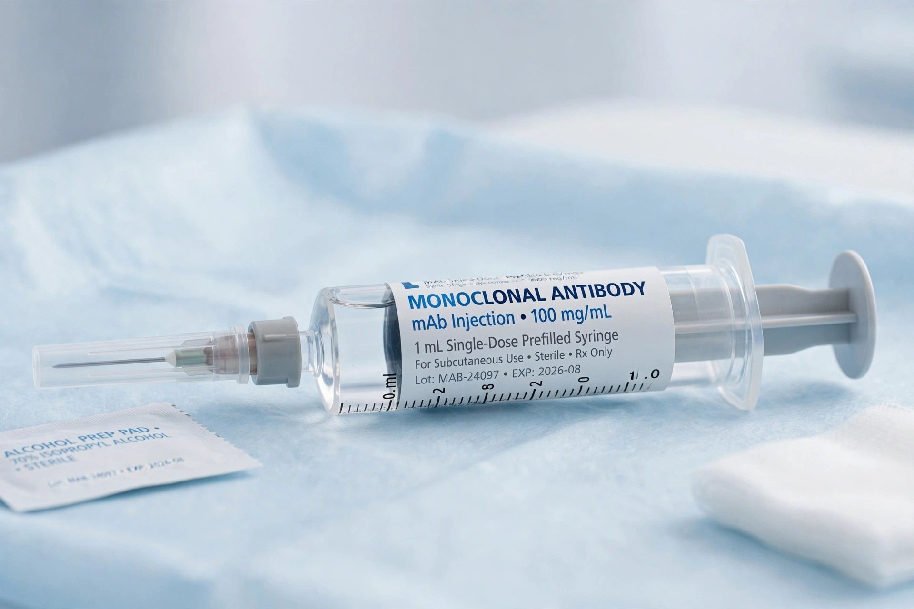

Omalizumab
| Omalizumab | |
|---|---|
| Trade name | Xolair |
| Type | Monoclonal antibody (humanised IgG1) |
| Target | Free immunoglobulin E (IgE) |
| First approved | 2003 (US FDA, allergic asthma) |
| Route | Subcutaneous injection |
| Developers | Genentech / Novartis |

Omalizumab, sold under the brand name Xolair, is a humanised monoclonal antibody medication that binds free immunoglobulin E (IgE), reducing allergic inflammation. It is used to treat moderate-to-severe allergic asthma, chronic spontaneous urticaria, chronic rhinosinusitis with nasal polyps, and — following approval by the US Food and Drug Administration in February 2024 — IgE-mediated food allergy, including peanut allergy.
Mechanism of action
Omalizumab binds the Cε3 domain of free IgE — the same region that docks to the high-affinity receptor FcεRI — preventing IgE from attaching to mast cells and basophils. As free IgE falls, surface FcεRI expression is progressively down-regulated, making effector cells less reactive to allergens. Because it does not bind receptor-bound IgE, it does not cross-link receptors or trigger degranulation.
Medical uses
- Allergic asthma: add-on therapy for patients aged 6 and older whose symptoms are inadequately controlled with inhaled corticosteroids; dosing is based on body weight and baseline IgE.
- Chronic spontaneous urticaria: for patients 12 and older remaining symptomatic despite antihistamines.
- Nasal polyps: add-on treatment in adults with inadequate response to nasal corticosteroids.
- Food allergy: to reduce allergic reactions, including anaphylaxis, from accidental exposure to one or more foods in patients aged 1 year and older, used with continued food avoidance; the approval followed the OUtMATCH trial, which showed substantially increased tolerance thresholds for peanut and other allergens such as those addressed by oral immunotherapy like Palforzia.
Adverse effects
Common adverse effects include injection-site reactions and headache. Omalizumab carries a boxed warning for a small risk of anaphylaxis (roughly 0.1–0.2% of patients), so initial doses are given under observation and patients are advised to carry epinephrine. Long-term studies have also examined debated signals regarding cardiovascular events and malignancy, without established causal links.
History
Omalizumab was developed through a collaboration involving Genentech, Novartis and Tanox, and was first approved in the United States in 2003. It was the first biologic therapy for allergic disease and the first anti-IgE drug; biosimilars began reaching markets in the mid-2020s.